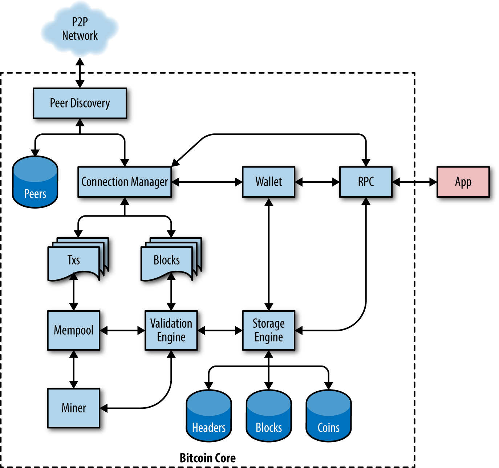

第三章 比特币核心

| Category | Content |
|---|---|
| Consensus | Validation Engine |
| Crypto | Txs / Validation Engine / Wallet |
| P2P | Connection Manager / Miner /Peer Discovery / RPC |
| Storage | Blocks / Mempool / Storage Engine / Txs / Wallet |
Bitcoin Core实现了比特币的所有方面，包括钱包，交易和区块验证引擎，以及P2P网络中的完整网络节点。